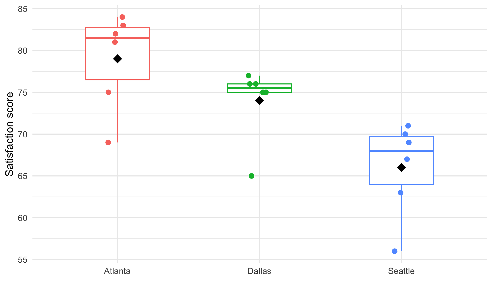
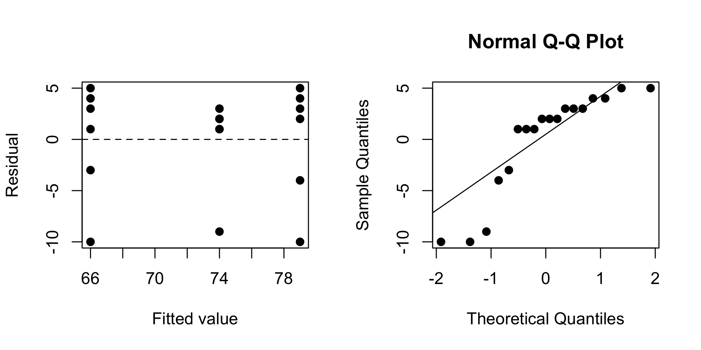
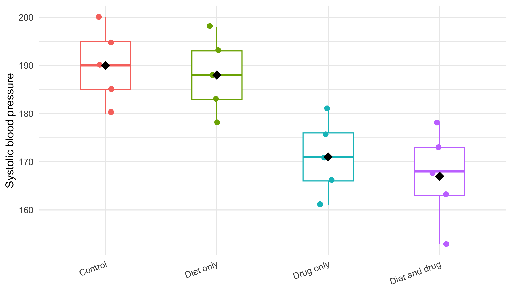
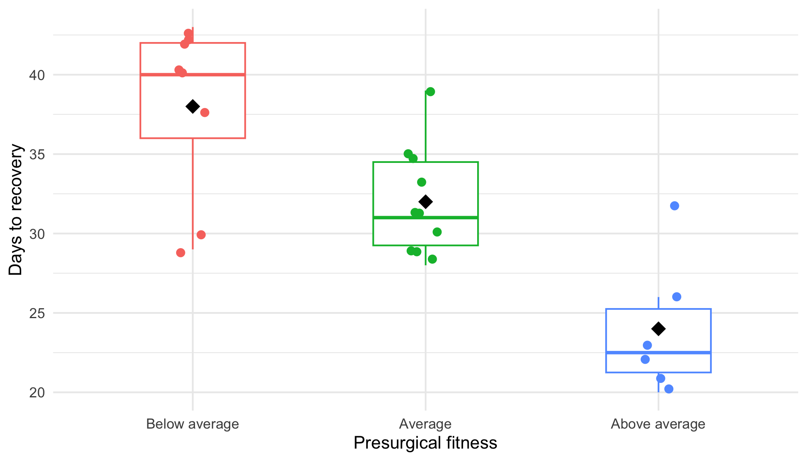
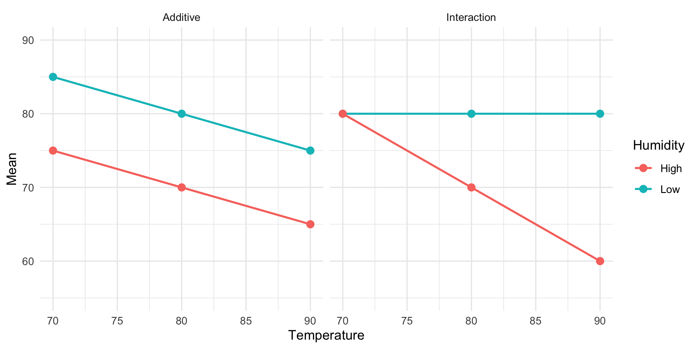
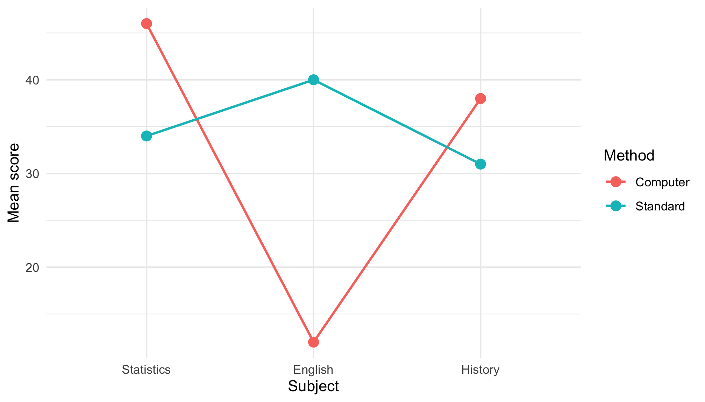

Chapter 9 Analysis of Variance (ANOVA)
A two-sample \(t\)-test compares two population means. Analysis of variance (ANOVA) extends the same logic to comparisons involving one or more explanatory variables and a numeric outcome. Although ANOVA is especially useful for three or more groups, it also works with two groups; for two independent groups, the classical one-way ANOVA statistic satisfies \(F=t^2\).
This chapter develops four habits that should accompany every ANOVA:
- Begin with the research design and visualize the observations.
- Report group means and uncertainty, not only an omnibus p-value.
- Check whether the assumptions are plausible and use an appropriate alternative when they are not.
- Follow an omnibus result with planned contrasts or multiplicity-adjusted comparisons when the research question requires them.
9.1 Why Not Run Many Unadjusted \(t\)-tests?
Suppose customer-satisfaction scores are available from Atlanta, Dallas, and Seattle. The data are stored directly in the chapter so that the example renders on GitHub and on computers other than the author’s.
| Location | n | Mean | Std. Dev. |
|---|---|---|---|
| Atlanta | 6 | 79 | 6 |
| Dallas | 6 | 74 | 4 |
| Seattle | 6 | 66 | 6 |

FIGURE 9.1: Customer-satisfaction scores by location
There are three pairwise comparisons: Atlanta–Dallas, Atlanta–Seattle, and Dallas–Seattle. If each were tested at \(\alpha=0.05\) without adjustment, the probability of at least one false rejection would exceed 0.05 when all three null hypotheses were true. If the tests were independent, that familywise error probability would be
\[1-(1-\alpha)^m=1-0.95^3=0.1426.\]
Pairwise comparisons sharing groups are not independent, so \(1-(1-\alpha)^m\) is an illustration rather than the exact familywise error for these tests. The general concern remains: running many unadjusted tests increases the chance of at least one false-positive result.
The Bonferroni procedure controls familywise error under arbitrary dependence by comparing each p-value with \(\alpha/m\). Holm’s procedure also controls familywise error and is generally at least as powerful. For all pairwise mean comparisons following a classical ANOVA, Tukey’s method is usually preferable because it is designed for that family of comparisons.
9.2 The Logic of One-way ANOVA
Let \(k\) be the number of groups and \(N\) the total sample size. A one-way ANOVA partitions the total variation into between-group and within-group components:
\[SS_{Total}=SS_{Between}+SS_{Within}.\]
The components are
\[SS_{Total}=\sum_{i=1}^{N}(y_i-\bar y)^2,\]
\[SS_{Between}=\sum_{j=1}^{k}n_j(\bar y_j-\bar y)^2,\]
and
\[SS_{Within}=\sum_{j=1}^{k}\sum_{i=1}^{n_j}(y_{ij}-\bar y_j)^2.\]
The sums of squares are converted to mean squares by dividing by their degrees of freedom:
\[MS_{Between}=\frac{SS_{Between}}{k-1},\qquad MS_{Within}=\frac{SS_{Within}}{N-k}.\]
The test statistic is a ratio of two variance estimates:
\[F=\frac{MS_{Between}}{MS_{Within}}.\]
When the population means are equal and the model assumptions hold, both mean squares estimate the common error variance. A large \(F\) indicates that differences among group means are large relative to the variation among observations within groups.
The hypotheses are
\[H_0:\mu_1=\mu_2=\cdots=\mu_k\]
and
\[H_A:\text{not all population means are equal}.\]
The alternative does not claim that every pair of means differs.
9.2.1 Manual decomposition for the call-center data
The grand mean is 73. The group means are 79 for Atlanta, 74 for Dallas, and 66 for Seattle. The sums of squares and ANOVA calculations are:
| Source | Sum of squares | Degrees of freedom | Mean square | \(F\) |
|---|---|---|---|---|
| Between locations | 516 | 2 | 258.0000 | 9.0000 |
| Within locations | 430 | 15 | 28.6666 | |
| Total | 946 | 17 |
Thus,
\[F=\frac{258}{28.6666}=9.0000.\]
The p-value is the right-tail probability of an \(F_{2,15}\) statistic at least as large as 9.0000, assuming the null hypothesis and model assumptions. Here, \(p=0.0027\), so the data provide evidence that the three population means are not all equal.
9.3 Estimation and Effect Size
The omnibus test should be accompanied by quantities that describe how large the differences are.
9.3.1 Mean differences and confidence intervals
For the call-center data, Tukey’s familywise 95% intervals give:
| Comparison | Mean difference | Lower limit | Upper limit | Adjusted p-value |
|---|---|---|---|---|
| Dallas minus Atlanta | -5 | -13.0293 | 3.0293 | 0.2689 |
| Seattle minus Atlanta | -13 | -21.0293 | -4.9706 | 0.0020 |
| Seattle minus Dallas | -8 | -16.0293 | 0.0293 | 0.0509 |
Only the Atlanta–Seattle difference is clearly separated from zero using Tukey’s familywise 95% procedure. The Dallas–Seattle comparison is close to the conventional threshold, illustrating why an omnibus rejection does not imply that every pair differs.
9.3.2 \(\eta^2\) and \(\omega^2\)
Eta squared is the proportion of sample variation attributed to the factor:
\[\eta^2=\frac{SS_{Between}}{SS_{Total}}.\]
For the call-center data, \(\eta^2=516/946=0.5454\). This is a descriptive sample effect size and tends to be upwardly biased as an estimate of the population effect.
Omega squared adjusts for that bias:
\[\omega^2=\frac{SS_{Between}-(k-1)MS_{Within}}{SS_{Total}+MS_{Within}}.\]
Here, \(\omega^2=0.4705\). Effect-size labels such as “small” and “large” are context dependent; a difference should be interpreted in the units and consequences of the outcome whenever possible.
9.4 Planned Contrasts and Post-hoc Comparisons
The comparison method should match the question.
- A planned contrast tests a scientifically specified comparison, such as control versus the average of all treatments. Planned contrasts can be more focused and powerful than testing every pair.
- Tukey’s method is appropriate when all pairwise group comparisons are of interest under the classical ANOVA model.
- Dunnett’s method is designed for comparing several treatments with one control.
- Holm’s method provides general familywise error control for a chosen collection of tests.
- Games–Howell comparisons are useful after a heteroscedastic analysis when variances and sample sizes differ.
Contrasts should be specified before looking at the results whenever the study permits. A post-hoc search through many possible contrasts can capitalize on chance even if each reported comparison is adjusted.
9.5 Assumptions and Diagnostics
Classical one-way ANOVA assumes:
- Independent observations. Independence comes from the sampling or assignment process. It cannot be verified from a residual plot. Repeated observations on one person, students nested in classrooms, or patients nested in clinics violate a simple independent-observations analysis.
- A numeric outcome with approximately normal errors within groups. The normality assumption concerns model errors or residuals, not the pooled raw outcome.
- Equal population error variances. Classical ANOVA pools within-group variation into a common estimate.
- No severely influential observations. Means and squared deviations are sensitive to outliers.
Use the research design, group plots, a residual-versus-fitted plot, and a normal Q–Q plot together.

FIGURE 9.2: Residual diagnostics for the call-center ANOVA
A residual-versus-fitted plot can reveal unequal spread or unusual observations. A Q–Q plot can reveal strong skewness, heavy tails, or outliers. With small samples, all diagnostics are uncertain. Formal normality tests should not be used as an automatic gatekeeper: they have little power in small samples and can flag inconsequential deviations in large samples.
ANOVA is often reasonably robust to moderate nonnormality when groups are balanced and no severe outliers are present. Unequal variances are more troublesome when group sizes are also unequal, particularly when the smallest group has the largest variance.
9.6 Alternatives to Classical One-way ANOVA
9.6.1 Welch’s ANOVA
Welch’s ANOVA does not assume equal population variances and should often replace the pooled test when spreads differ. It uses modified denominator degrees of freedom. For the call-center data, Welch’s test gives \(F(2,9.8435)=7.4163\) and \(p=0.0108\). Its conclusion agrees with the classical test, although the statistics differ.
In R, the analysis is obtained with oneway.test(Score ~ Location, data = callcenter, var.equal = FALSE). When follow-up comparisons are needed, use a heteroscedastic procedure such as Games–Howell rather than ordinary Tukey intervals.
9.6.2 Kruskal–Wallis and robust methods
The Kruskal–Wallis test compares group distributions through ranks. Under similarly shaped group distributions, it is often interpreted as detecting a location shift. It is not automatically a test of medians, and it tests a different null hypothesis from ANOVA.
Rank methods, permutation tests, trimmed-mean procedures, or robust regression may be useful when the outcome is ordinal, highly skewed, contaminated by outliers, or otherwise poorly represented by means and common variances. The choice should follow the estimand of interest rather than a mechanical preliminary significance test.
9.7 One-way Examples
9.7.1 Corrected example: systolic blood pressure and treatment
Twenty independently assigned participants enter one of four treatment conditions. The observations are arranged in four consecutive blocks of five, so the treatment labels must also be assigned in blocks of five.

FIGURE 9.3: Systolic blood pressure by assigned treatment
The group means are 190 for control, 188 for diet only, 171 for drug only, and 167 for diet and drug. The one-way analysis gives \(F(3,16)=9.7619\) and \(p=0.0006\). The effect sizes are \(\eta^2=0.6466\) and \(\omega^2=0.5679\).
Tukey comparisons show evidence that drug only differs from control (\(p=0.0117\)), diet and drug differs from control (\(p=0.0025\)), drug only differs from diet only (\(p=0.0251\)), and diet and drug differs from diet only (\(p=0.0054\)). Diet only does not differ from control, and drug only does not differ from the combined treatment.
Because participants were independently randomized to treatment, treatment differences can receive a causal interpretation if assignment was maintained, outcomes were measured comparably, and attrition or noncompliance did not compromise the design.
9.7.2 Presurgical fitness and recovery time
Suppose a surgeon observes recovery time among 24 patients classified by presurgical fitness. The mean recovery times are 38 days for below-average fitness, 32 days for average fitness, and 24 days for above-average fitness.

FIGURE 9.4: Recovery time by presurgical fitness
The analysis gives \(F(2,21)=16.9615\) and \(p<0.0001\). Tukey comparisons indicate mean differences for average versus below average (\(p=0.0253\)), above average versus below average (\(p<0.0001\)), and above average versus average (\(p=0.0060\)).
Because fitness was observed rather than randomly assigned, these results show an association. They do not establish that changing fitness alone would cause the observed reduction in recovery time; age, underlying health, procedure severity, and other variables may confound the relationship.
9.8 Factorial ANOVA
A factor is a categorical explanatory variable. A factorial ANOVA studies two or more factors simultaneously. For two factors \(A\) and \(B\), the model may be written as
\[Y_{ijk}=\mu+\alpha_i+\beta_j+(\alpha\beta)_{ij}+\varepsilon_{ijk}.\]
The model separates:
- the average or main effect of factor \(A\);
- the average or main effect of factor \(B\); and
- the interaction, which asks whether the effect of one factor depends on the level of the other.
The interaction should be examined first. If it is important, averaged main effects can conceal opposing or highly variable effects across levels.
9.8.1 Additive effects and interaction effects
With additive effects, group-mean profiles are parallel: the difference between levels of one factor is constant across levels of the other. Nonparallel profiles indicate a possible interaction, although sampling uncertainty requires a formal analysis.

FIGURE 9.5: Additive and interacting mean patterns
9.8.2 Drug and diet factorial example
The corrected four-group blood-pressure data can also be represented as a balanced \(2\times2\) factorial design: drug versus no drug crossed with diet modification versus no modification.
The factorial analysis gives:
| Source | \(F\) | p-value | Partial \(\eta^2\) |
|---|---|---|---|
| Drug | 28.5714 | <0.0001 | 0.6410 |
| Diet | 0.6428 | 0.4344 | 0.0386 |
| Drug \(\times\) diet | 0.0714 | 0.7927 | 0.0044 |
The interaction is small and not statistically distinguishable from zero. Averaged across diet conditions, the drug groups have lower mean blood pressure. The diet main effect is small and uncertain. Because the interaction is weak, interpreting these average main effects is reasonable.
For a factorial effect, partial eta squared is
\[\eta_p^2=\frac{SS_{effect}}{SS_{effect}+SS_{error}}.\]
Partial \(\eta^2\) describes an effect relative to that effect plus residual variation. It should not be confused with the proportion of all outcome variation explained, and values from studies containing different sets of factors are not always directly comparable.
9.8.3 Pedagogy and subject: follow the interaction
The pedagogy data cross three subjects with two teaching methods. The cell means are:
| Subject | Standard method | Computer method | Computer minus standard |
|---|---|---|---|
| Statistics | 34 | 46 | 12 |
| English | 40 | 12 | -28 |
| History | 31 | 38 | 7 |

FIGURE 9.6: Teaching-method effect depends strongly on subject
The factorial analysis gives a subject effect, \(F(2,30)=10.7374\), \(p=0.0003\); an averaged method effect, \(F(1,30)=1.4568\), \(p=0.2368\); and a strong subject-by-method interaction, \(F(2,30)=25.6294\), \(p<0.0001\).
It would be misleading to summarize this as “method has no effect.” The nonsignificant main effect says that the method difference averaged across all three subjects is uncertain. The interaction shows that the method difference changes dramatically by subject: computer instruction is associated with a 12-point increase in Statistics, a 28-point decrease in English, and a 7-point increase in History.
Follow-up simple effects or estimated marginal means should compare methods within each subject with multiplicity adjustment. The unadjusted within-subject tests give \(p=0.0478\) for Statistics, \(p<0.0001\) for English, and \(p=0.1570\) for History; adjusted results should be used for confirmatory reporting.
9.9 Balanced and Unbalanced Designs
A balanced factorial design has the same number of observations in every factor combination. In balanced designs, factors are orthogonal and standard sums-of-squares calculations agree.
In an unbalanced design, unequal cell sizes can make effects statistically dependent. Type I sums of squares test effects sequentially and therefore depend on term order. Type II tests each main effect after the other main effects but are generally inappropriate as a main summary when an important interaction is present. Type III tests each term after every other term, but their interpretation depends on contrast coding and the model’s reference structure.
There is no universally correct sums-of-squares “type.” State the estimand, inspect cell counts, retain scientifically required interactions, and use estimated marginal means or explicit contrasts that correspond to the question.
Replication also matters. With only one observation per factor combination, the usual two-way model cannot separately estimate an unrestricted interaction and residual error without additional assumptions.
9.11 Power and Sample-size Planning
ANOVA power depends on the number of groups or cells, the smallest substantively important pattern of means, within-group variability, allocation across groups, the significance level, and the planned contrasts or interaction of interest.
Cohen’s \(f\) is sometimes used for planning:
\[f=\sqrt{\frac{\eta^2}{1-\eta^2}}.\]
Power calculations should be based on a defensible smallest important effect, not an effect selected merely to produce an affordable sample. Inflate the calculated sample size for attrition, clustering, unequal allocation, and planned subgroup analyses. Interaction effects often require substantially larger samples than main effects.
9.12 A Practical ANOVA Workflow
- Identify the outcome, factors, observational unit, and whether observations are independent, paired, repeated, or clustered.
- Plot all observations and summarize group sizes, means, standard deviations, and confidence intervals.
- Fit the model that represents the design, including scientifically necessary interactions.
- Examine residual and influence diagnostics.
- If assumptions are doubtful, select a method targeting the desired estimand, such as Welch’s ANOVA or a robust model.
- Report the omnibus test, an effect size, and model-based means or contrasts with confidence intervals.
- Use planned or multiplicity-adjusted follow-up comparisons.
- Interpret association or causation according to the research design.
A concise one-way report might read:
Mean satisfaction scores were 79 in Atlanta, 74 in Dallas, and 66 in Seattle. The classical one-way ANOVA indicated that the population means were not all equal, \(F(2,15)=9.0000\), \(p=0.0027\), \(\omega^2=0.4705\). Tukey’s familywise comparison estimated that Seattle was 13 points lower than Atlanta (95% CI: -21.0293 to -4.9706; adjusted \(p=0.0020\)). The other pairwise intervals included zero. These location differences are associational unless the design supports a causal interpretation.
9.13 Practice Problems
Problem 1
For the call-center data, verify the grand mean, sums of squares, degrees of freedom, mean squares, and \(F\) statistic by hand. Explain why a significant omnibus result does not imply that all three pairs differ.
Problem 2
Use the corrected blood-pressure data to conduct a one-way ANOVA. Report the four means, the omnibus result, \(\omega^2\), and Tukey comparisons. Explain what feature of the assignment mechanism permits or prevents a causal conclusion.
Problem 3
A study has group standard deviations of 4, 5, and 15, with sample sizes of 40, 35, and 8. Which concern is more important: slight nonnormality or the combination of unequal variances and unequal sample sizes? Recommend a primary analysis and follow-up procedure.
Problem 4
Presurgical fitness is observed rather than randomly assigned. Explain why the significant ANOVA does not prove that increasing fitness causes faster recovery. Name at least three plausible confounders.
Problem 5
In the pedagogy example, explain why the nonsignificant method main effect does not mean teaching method is irrelevant. Identify the comparisons needed to interpret the interaction.
Problem 6
A researcher measures stress for the same participants before training, immediately after training, and six months later. Explain why a one-way independent-groups ANOVA is inappropriate and identify suitable alternatives.
Problem 7
A factorial experiment has one observation in each combination of temperature and humidity. Explain why the full interaction cannot ordinarily be separated from residual error. What design change would solve the problem?
Problem 8
Researchers fail to reject an ANOVA comparing four interventions. Can they conclude that the interventions are practically equivalent? Explain what additional design and analysis would be required.
Click here to see the answers
1. The grand mean is 73. \(SS_{Between}=516\), \(SS_{Within}=430\), and \(SS_{Total}=946\). The degrees of freedom are 2, 15, and 17. Thus, \(MS_{Between}=258.0000\), \(MS_{Within}=28.6666\), and \(F=9.0000\). The omnibus alternative is only that not all means are equal. Tukey intervals identify Atlanta–Seattle as clearly different; the other two intervals include zero.
2. The means are 190, 188, 171, and 167. The analysis gives \(F(3,16)=9.7619\), \(p=0.0006\), and \(\omega^2=0.5679\). Tukey comparisons distinguish each drug condition from control and from diet alone, but not drug only from diet and drug. Diet alone does not differ from control. Causal interpretation requires genuine random assignment, comparable treatment delivery and measurement, and no consequential attrition or noncompliance.
3. The combination of unequal variances and unequal sample sizes is especially concerning because the smallest group has the largest spread. Use Welch’s ANOVA as the primary mean comparison and Games–Howell follow-ups. Plot the data and inspect possible outliers; a robust or permutation analysis may be useful as a sensitivity check.
4. Fitness may be associated with age, underlying health, procedure severity, socioeconomic resources, adherence, or access to rehabilitation. ANOVA alone does not separate fitness from these possible confounders. A randomized intervention or a carefully justified adjusted observational analysis would be needed for a stronger causal claim.
5. The method main effect averages over subjects, but the interaction shows that the method difference changes across subjects. Compare computer and standard instruction within Statistics, English, and History using estimated marginal means or simple effects with multiplicity adjustment. Also report the cell means and their intervals.
6. The three measurements from one person are correlated, violating independent observations. Use repeated-measures ANOVA when its covariance assumptions are suitable or a mixed-effects model with observations nested within participants. Check sphericity for a traditional repeated-measures analysis with three times and apply a correction if needed.
7. With one observation per cell, the unrestricted interaction consumes the variation that would otherwise estimate residual error. Collect multiple independently assigned observations in every temperature-by-humidity combination.
8. Failure to reject equality may reflect low power and does not establish equivalence. Prespecify a practically negligible range for the mean differences or contrasts, design the study for adequate equivalence power, and use confidence intervals or formal equivalence tests to show that all required effects lie inside that range.
Show optional R code
# One-way model, effect sizes, and Tukey comparisons
fit <- aov(Score ~ Location, data = callcenter)
summary(fit)
TukeyHSD(fit)
a <- anova(fit)
eta2 <- a[1, "Sum Sq"] / sum(a[, "Sum Sq"])
omega2 <- (a[1, "Sum Sq"] - a[1, "Df"] * a[2, "Mean Sq"]) /
(sum(a[, "Sum Sq"]) + a[2, "Mean Sq"])
# Welch's ANOVA
oneway.test(Score ~ Location, data = callcenter, var.equal = FALSE)
# Factorial model
fit_factorial <- aov(score ~ subject * method, data = pedagogy)
summary(fit_factorial)
# Basic diagnostic plots
plot(fit, which = 1)
plot(fit, which = 2)
# Power-planning template; f must be substantively justified
power.anova.test(groups = 4, between.var = 25, within.var = 100,
power = 0.80, sig.level = 0.05)